A1. $\vec M$의 크기의 제곱은
$$M^2 = \vec M\cdot\vec M$$이므로, 그 시간 미분은
$$\frac{\partial}{\partial t}M^2 = 2\vec M\cdot\frac{\partial\vec M}{\partial t}.$$임의의 벡터 $\vec a$, $\vec b$에 대해 벡터곱 $\vec a\times\vec b$는 두 벡터에 수직이다. 특히 벡터 $\vec M\times\vec B_{\rm eff}$와 $\vec M\times\dfrac{\partial\vec M}{\partial t}$는 $\vec M$에 수직이므로, LLG 방정식에 따라 $\vec M$과 $\dfrac{\partial\vec M}{\partial t}$는 서로 수직이다. 따라서
$$\vec M\cdot\frac{\partial\vec M}{\partial t} = 0,\qquad \frac{\partial}{\partial t}M^2 = 0$$이고, $\vec M$의 크기는 일정하다.
A2. 다음 방정식의 $z$ 성분을 생각하자.
$$\frac{\mathrm{d}\vec m}{\mathrm{d}t} = -\frac{\gamma}{1+\alpha^2}\,\vec m\times\vec B_{\rm eff} - \frac{\alpha\gamma}{1+\alpha^2}\Bigl((\vec m\cdot\vec B_{\rm eff})\,\vec m - \vec B_{\rm eff}\Bigr).$$벡터곱 $(\vec m\times\vec B_{\rm eff})$는 $z$축에 수직이므로, 방정식에는 두 번째 항만 기여한다. $\vec m\cdot\vec B_{\rm eff} = m_zB_0$임을 고려하면
$$\dot m_z = \frac{\alpha\gamma}{1+\alpha^2}B_0\,(1 - m_z^2).$$변수를 분리하면
$$\frac{\mathrm{d}m_z}{1 - m_z^2} = \frac{\alpha\gamma}{1+\alpha^2}B_0\,\mathrm{d}t$$이고, 이를 $0$부터 $t$까지 적분하면
$$\frac{1}{2}\ln\frac{1+m_z(t)}{1-m_z(t)}\Biggr|_0^t = \frac{\alpha\gamma}{1+\alpha^2}B_0t.$$초기 조건 $m_z(0) = 0$을 대입하면
$$\frac{1}{2}\ln\frac{1+m_z(t)}{1-m_z(t)} = \frac{\alpha\gamma}{1+\alpha^2}B_0t$$이고, 답을 얻는다.
A3. 첫 번째 풀이. 벡터 $\vec m$의 $xy$ 평면 위 사영을 $\vec m_{xy}$라 하자. 벡터 $\vec B_{\rm eff}$는 $z$축 방향이므로 그 $xy$ 평면 위 사영은 0이다. 또한 $\vec m\cdot\vec B_{\rm eff} = m_zB_0$이고
$$\vec m\times\vec B_{\rm eff} = (\vec m_{xy} + m_z\vec e_z)\times\vec B_{\rm eff} = \vec m_{xy}\times\vec B_{\rm eff}\qquad(\vec e_z\times\vec B_{\rm eff} = 0)$$이므로, LLG 방정식의 $xy$ 평면 위 사영은 다음 꼴이다.
$$\frac{\mathrm{d}\vec m_{xy}}{\mathrm{d}t} = -\frac{\gamma}{1+\alpha^2}\,\vec m_{xy}\times\vec B_{\rm eff} - \frac{\alpha\gamma}{1+\alpha^2}\,m_zB_0\,\vec m_{xy}.$$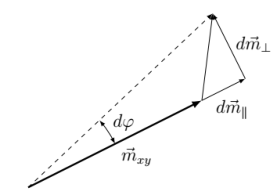
여기서 첫 번째 항(크기 $\gamma B_0m_{xy}/(1+\alpha^2)$)은 $\vec m_{xy}$에 수직이므로 $\vec m_{xy}$를 회전시킨다. 두 번째 항은 $\vec m_{xy}$에 평행하며 길이를 바꾼다. 시간 $\mathrm{d}t$ 동안 수직 방향 변화 성분은
$$\mathrm{d}m_\perp = \frac{\gamma B_0m_{xy}}{1+\alpha^2}\,\mathrm{d}t$$이므로, 회전각은 $\mathrm{d}\varphi = \mathrm{d}m_\perp/m_{xy}$이고 각속도는
$$\Omega = \frac{\mathrm{d}\varphi}{\mathrm{d}t} = \frac{\gamma B_0}{1+\alpha^2}.$$$\Omega$를 얻는 또 다른 방법은, 어떤 벡터가 각속도 $\vec\Omega$로 회전하면 그 시간 미분이
$$\frac{\mathrm{d}\vec m_{xy}}{\mathrm{d}t} = \vec\Omega\times\vec m_{xy}$$임을 이용하는 것이다. LLG 방정식의 첫 번째 항과 비교하면 곧바로
$$\vec\Omega = \frac{\gamma\vec B_{\rm eff}}{1+\alpha^2} = \frac{\gamma B_0}{1+\alpha^2}\,\vec e_z.$$따라서 답은
두 번째 풀이. LLG 방정식을 $x$축과 $y$축에 사영하면
$$\begin{cases}\dot m_x = -\dfrac{\gamma B_0}{1+\alpha^2}\,m_y - \dfrac{\alpha\gamma B_0m_z}{1+\alpha^2}\,m_x,\\[2mm] \dot m_y = \dfrac{\gamma B_0}{1+\alpha^2}\,m_x - \dfrac{\alpha\gamma B_0m_z}{1+\alpha^2}\,m_y.\end{cases}$$새 복소 변수 $\hat m = m_x + im_y$를 도입하고, 두 번째 식에 $i$를 곱한 뒤 두 식을 더하면
$$\frac{\mathrm{d}}{\mathrm{d}t}(m_x + im_y) = -\frac{\gamma B_0}{1+\alpha^2}(-m_y + im_x) - \frac{\alpha\gamma m_zB_0}{1+\alpha^2}(m_x + im_y).$$이 식은 다음과 같이 다시 쓸 수 있다.
$$\frac{\mathrm{d}\hat m}{\mathrm{d}t} = i\frac{\gamma B_0}{1+\alpha^2}\,\hat m - \frac{\alpha\gamma B_0m_z}{1+\alpha^2}\,\hat m.$$변수를 분리하면
$$\int\frac{\mathrm{d}\hat m}{\hat m} = \int \mathrm{d}t\left(\frac{i\gamma B_0}{1+\alpha^2} - \frac{\alpha\gamma B_0}{1+\alpha^2}\,m_z\right).$$초기 조건 $\hat m(0) = m_x(0) + im_y(0) = 1$에 의해
$$\ln\hat m = \frac{i\gamma B_0t}{1+\alpha^2} - \frac{\alpha\gamma B_0}{1+\alpha^2}\int_0^t \mathrm{d}t\,m_z(t),\qquad \hat m = A(t)\,e^{i\varphi(t)},$$여기서
$$A(t) = \exp\left(-\frac{\alpha\gamma B_0}{1+\alpha^2}\int_0^t m_z(t)\,\mathrm{d}t\right)$$는 $\vec m_{xy}$의 크기이고,
$$\varphi = \frac{\gamma B_0t}{1+\alpha^2}$$는 $\vec m_{xy}$의 회전각에 해당한다. 왜냐하면
$$m_x(t) = A(t)\cos\varphi(t),\qquad m_y(t) = A(t)\sin\varphi(t)$$이기 때문이다. 각 $\varphi$는 $t$의 일차 함수이므로 각속도는 일정하고, 그 값은 앞에서 얻은 것과 같다. $m_z(t)$의 식을 이용하면 크기 $A(t)$도 구할 수 있다.
$$\ln A(t) = -\frac{\alpha\gamma B_0}{1+\alpha^2}\int_0^t m_z(t)\,\mathrm{d}t = -\int_0^t\frac{\alpha\gamma B_0\,\mathrm{d}t}{1+\alpha^2}\tanh\frac{\alpha\gamma B_0t}{1+\alpha^2} = -\ln\cosh\frac{\alpha\gamma B_0t}{1+\alpha^2},$$즉
$$A(t) = \frac{1}{\cosh\dfrac{\alpha\gamma B_0t}{1+\alpha^2}}$$이므로 $m_z^2 + m_{xy}^2 = 1$, 즉 $\vec m$의 크기는 일정하며 1과 같다. 여기서 다음 공식과 관계식을 이용하였다.
$$\int\tanh x\,\mathrm{d}x = \int\frac{\sinh x}{\cosh x}dx = \int\frac{\mathrm{d}(\cosh x)}{\cosh x} = \ln\cosh x + C,\qquad \tanh^2x + \frac{1}{\cosh^2x} = 1.$$복소수를 쓰지 않고 해를 다음 꼴로 찾을 수도 있다.
$$m_x = A(t)\cos\varphi(t),\qquad m_y = A(t)\sin\varphi(t).$$이 식들을 $\dot m_x$, $\dot m_y$의 방정식에 대입하면
$$\frac{\mathrm{d}A}{\mathrm{d}t}\cos\varphi - A\sin\varphi\,\frac{\mathrm{d}\varphi}{\mathrm{d}t} = -\frac{\gamma B_0}{1+\alpha^2}A\sin\varphi - \frac{\alpha\gamma B_0m_z}{1+\alpha^2}A\cos\varphi;$$ $$\frac{\mathrm{d}A}{\mathrm{d}t}\sin\varphi + A\cos\varphi\,\frac{\mathrm{d}\varphi}{\mathrm{d}t} = \frac{\gamma B_0}{1+\alpha^2}A\cos\varphi - \frac{\alpha\gamma B_0m_z}{1+\alpha^2}A\sin\varphi.$$이 방정식들로부터 크기와 각의 시간 미분을 얻을 수 있다.
$$\frac{\mathrm{d}\varphi}{\mathrm{d}t} = \frac{\gamma B_0}{1+\alpha^2},\qquad \frac{\mathrm{d}A}{\mathrm{d}t} = -\frac{\alpha\gamma B_0m_z}{1+\alpha^2}A.$$이 관계식들은 처음 연립방정식에서 $\cos\varphi$와 $\sin\varphi$의 계수가 같다는 것에 지나지 않는다. 첫 번째 식은 앞에서 얻은 각속도의 식을, 두 번째 식은 크기의 미분을 준다.
B1. 정의에 의해
$$\vec B_{{\rm eff},i} = -\frac{1}{a^3}\frac{\partial W(\vec M_i)}{\partial\vec M_i},$$여기서 $W$는 계의 에너지이며, 문제에 주어진 기여들로 이루어진다.
$$W = \sum_i a^3\left(-\frac{KM_{i,z}^2}{2M_0^2} + \frac{K_1M_{i,y}^2}{2M_0^2}\right) - \sum_i\frac{A\vec M_i\vec M_{i+1}a}{M_0^2} - \sum_i a^3\vec B_0\vec M_i.$$첫 번째 항은 비등방성 에너지로, 각 칸의 자화에는 그중 한 항만 의존하므로 대응하는 자기장은 다음 꼴이다.
$$\vec B_{{\rm an},i} = \frac{\partial}{\partial M_{z,i}}\frac{KM_{i,z}^2}{2M_0^2}\,\vec e_z - \frac{\partial}{\partial M_{y,i}}\frac{K_1M_{i,y}^2}{2M_0^2}\,\vec e_y = \frac{KM_{i,z}}{M_0^2}\vec e_z - \frac{k_1KM_{i,y}}{M_0^2}\vec e_y = \frac{K}{M_0}\left(m_{i,z}\vec e_z - k_1m_{i,y}\vec e_y\right).$$문제의 식과 비교하면
$$B_{\rm an} = \frac{K}{M_0}.$$$W$의 두 번째 항은 교환 에너지이며, 그중 두 항이 $\vec M_i$에 의존한다.
$$-\frac{Aa}{M_0^2}\vec M_i(\vec M_{i-1} + \vec M_{i+1}),$$따라서 유효 자기장은
$$\vec B_{\rm ex} = -\frac{1}{a^3}\frac{\partial}{\partial\vec M_i}\left(-\frac{Aa}{M_0^2}\vec M_i(\vec M_{i-1} + \vec M_{i+1})\right) = \frac{A}{a^2M_0^2}(\vec M_{i-1} + \vec M_{i+1}) = \frac{A}{a^2M_0}(\vec m_{i-1} + \vec m_{i+1}).$$그러므로
$$B_{\rm ex} = \frac{A}{a^2M_0}.$$마지막 항을 미분하면, 문제에 쓰여 있는 대로 외부 자기장 $\vec B_0$의 유효 자기장 기여를 얻는다.
B2. $\alpha = 0.5$, $\beta = 100$, $b = 0$, $T = 10$으로 프로그램을 실행하자. 그림은 $[0, 10]$ 범위의 여러 $t$에서 $m_x$, $m_y$, $m_z$의 그래프이다. 마지막 두 그림의 자화 분포가 거의 같으므로 정상 상태로 볼 수 있다. 특히 정상 상태의 특징 중 하나는 모든 $x$에서 $m_y(x) = 0$이라는 것이다.
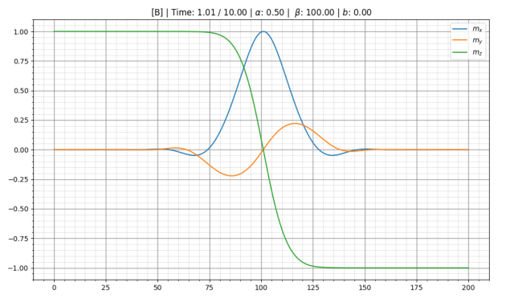
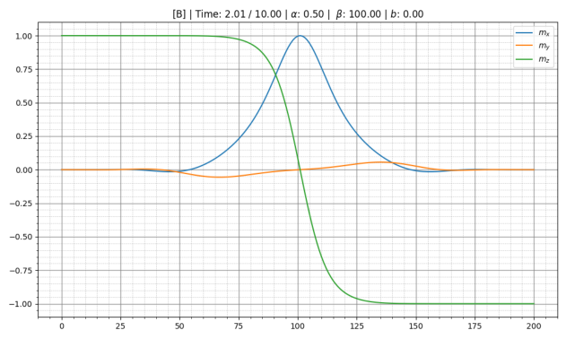
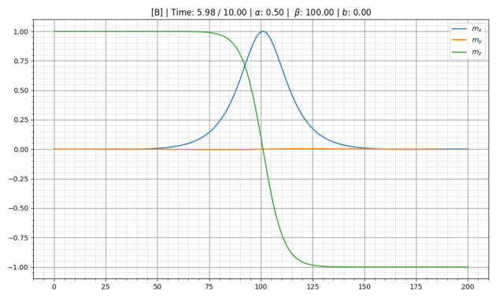
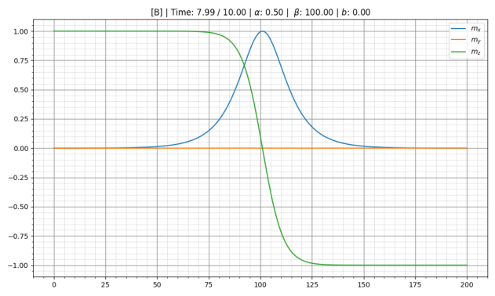
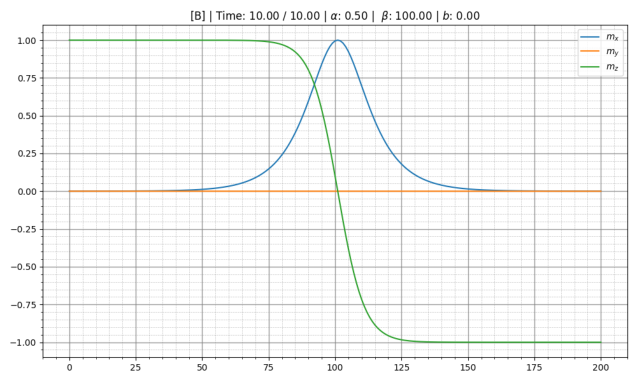
$d$ 측정의 정확도를 높이기 위해, $t = 10$에서 $m_z(x)$ 그래프의 일부를 양 끝 점이 $m_z = \pm 0.5$에 해당하도록 확대하자. $m_z = 0.5$와 $m_z = -0.5$인 점의 $x$좌표는 각각 $x_{\rm left} = 95.5$와 $x_{\rm right} = 106.5$이므로 $d = x_{\rm right} - x_{\rm left} = 11.0$이다.
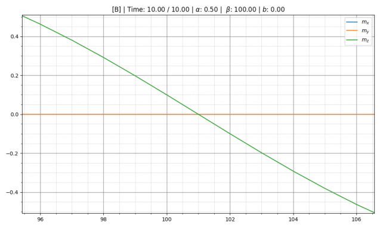
B3. B2에서 $\alpha = 0.5$, $\beta = 100$, $b = 0$, $T = 10$일 때 마지막에 정상 상태에 이르는 것을 보았다. 따라서 이 문항에서는 같은 $\alpha$와 $T$ 값과 서로 다른 $\beta\in[20, 400]$을 사용한다. 폭 $d$는 B2의 풀이에서 설명한 방법으로 $t = 10$에서 구한다. 계가 실제로 정상 상태인지 확인하기 위해, 그래프에서 $t = 10$일 때 $m_y\equiv 0$인지 확인한다. 자구벽의 왼쪽(오른쪽) 경계의 좌표를 $x_{\rm left}$($x_{\rm right}$)라 하면, 벽의 폭은 $d = x_{\rm right} - x_{\rm left}$로 계산할 수 있다.
| $\beta$ | $x_{\rm left}$ | $x_{\rm right}$ | $d$ |
|---|---|---|---|
| 20 | 98.5 | 103.5 | 5.0 |
| 100 | 95.5 | 106.5 | 11.0 |
| 200 | 93.2 | 108.8 | 15.6 |
| 300 | 91.5 | 110.5 | 19.0 |
| 400 | 90.0 | 112.0 | 22.0 |
B4. $d(\beta) = \gamma\beta^c$라 하자. 여기서 $\gamma$는 상수 계수이다. 그러면 $\ln d(\beta) = \ln\gamma + c\ln\beta$이므로 $\ln d(\ln\beta)$ 의존성은 선형이고 그 기울기는 $c$와 같다. B3에서 얻은 점들에 대해 $\ln d$와 $\ln\beta$를 계산한 뒤, 그 데이터로 Excel에서 그래프를 그린다.
| $\ln\beta$ | 3.00 | 4.61 | 5.30 | 5.70 | 5.99 |
|---|---|---|---|---|---|
| $\ln d$ | 1.61 | 2.40 | 2.75 | 2.94 | 3.09 |
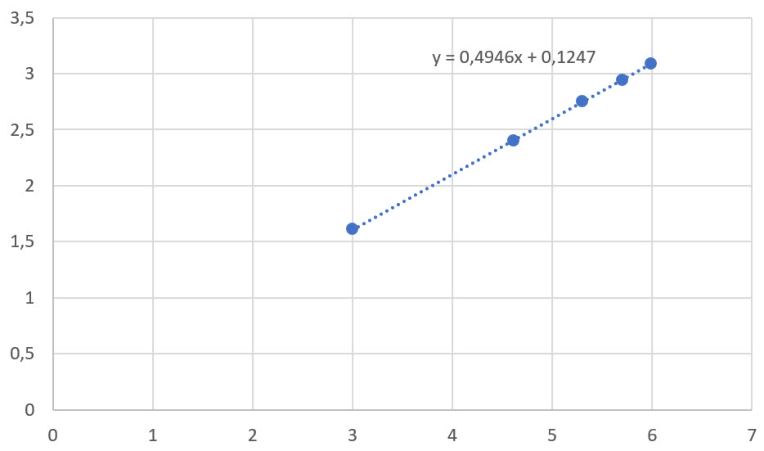
C1. $b\ne 0$인 값을 정하고 프로그램을 실행하면, 자구벽이 오른쪽으로 움직이는 것을 볼 수 있다.
C2. 프로그램을 시작하면 과도 과정이 시작된다. $b$가 충분히 작으면 계는 등속 운동에 자리 잡고, 자기장 회전각 $\varphi$는 더 이상 변하지 않는다. 운동이 등속이 될 만큼 시간 $T$가 충분히 길어야 한다. 길이 $L$은 그 시간 동안 자구벽이 오른쪽 끝에 닿지 않을 만큼이어야 한다. 한편 $T$와 $L$이 커질수록 실행 시간이 늘어나므로, 알맞은 매개변수를 찾아야 한다.
프로그램 시작 직후에는 아직 등속 운동이 확립되지 않으므로, 자구벽 중심의 처음 위치를 $x_0$이라 할 때 속도를 $v = \dfrac{x - x_0}{t}$로 계산할 수 없다. 측정은 정상 상태에서 해야 하므로 과도 과정의 지속 시간을 알아야 한다. 이를 위해 어떤 $b$에 대해 $x(t)$ 의존성을 재어 대략적인 과도 시간을 어림한다. 올바른 측정을 하는 또 다른 방법은 $m_y$의 모양이 시간에 따라 더 이상 변하지 않을 때만 재는 것이다(그래프를 확대해야 $m_y$의 변화가 보인다). 정상 상태에서는 측정이 매우 정확하므로, 벽 중심의 속도를 두 점만으로 $v = \dfrac{x_2 - x_1}{t_2 - t_1}$로 계산해도 충분하다.
자구벽의 중심에서는 $m_z = 0$이고 $m_x = m_{x0}$, $m_y = m_{y0}$가 둘 다 최대이다(그래프에서 $m_x$와 $m_y$의 최댓값의 좌표와 $m_z(x) = 0$인 좌표 $x$가 거의 일치함을 볼 수 있다). 따라서 등속 운동이 확립된 뒤에는 동등한 관계식 $m_{x0} = \cos\varphi$, $m_{y0} = \sin\varphi$ 중 어느 것으로도 각 $\varphi$를 구할 수 있다.
$$\varphi = \arcsin m_{y0} = \arccos m_{x0} = \arctan\frac{m_{y0}}{m_{x0}}.$$$m_y/m_x$의 그래프를 그려 보면 $\varphi$가 실제로 좌표에 의존하지 않음을 알 수 있다(참가자에게 이런 확인을 요구하지는 않는다).
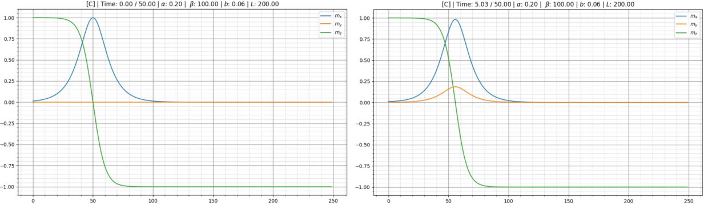
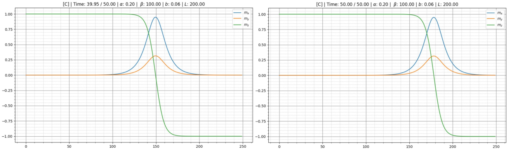
$b > 0.1$이면 자구벽의 거동이 바뀐다. 자화각 $\varphi$가 커지고 자기 모멘트가 $z$축 둘레로 회전한다. 자구벽의 운동에는 그 중심의 진동이 동반된다. $b < 0.1$인 경우와 달리 $m_y$가 때때로 $m_x$보다 커진다(주황색과 파란색 그래프가 서로 바뀐다). 따라서 $b_{\rm cr}\approx 0.1$이다. $b < 0.1$에 대해 $v(b)$와 $\varphi(b)$를 재자.
| $b$ | $m_y$ | $t_1$ | $x_1$ | $t_2$ | $x_2$ | $v$ | $\varphi$ |
|---|---|---|---|---|---|---|---|
| 0.03 | 0.152 | 40 | 101.5 | 50 | 116.5 | 1.50 | 0.152 |
| 0.05 | 0.258 | 40 | 134.0 | 50 | 158.5 | 2.45 | 0.261 |
| 0.06 | 0.316 | 40 | 149.0 | 50 | 178.0 | 2.90 | 0.322 |
| 0.07 | 0.378 | 40 | 164.0 | 50 | 197.0 | 3.30 | 0.387 |
| 0.08 | 0.446 | 35 | 159.0 | 45 | 195.0 | 3.60 | 0.462 |
| 0.09 | 0.525 | 37 | 176.0 | 43 | 200.0 | 4.00 | 0.893 |
편집자 주: 원문 표의 마지막 줄 $\varphi = 0.893$은 $\sin 2\varphi$의 값이다. $\varphi = \arcsin 0.525 = 0.553$이고 $\sin 2\varphi = 0.893$이다(C4 그래프의 마지막 점).
C3. $v(b)$ 그래프를 그린다.
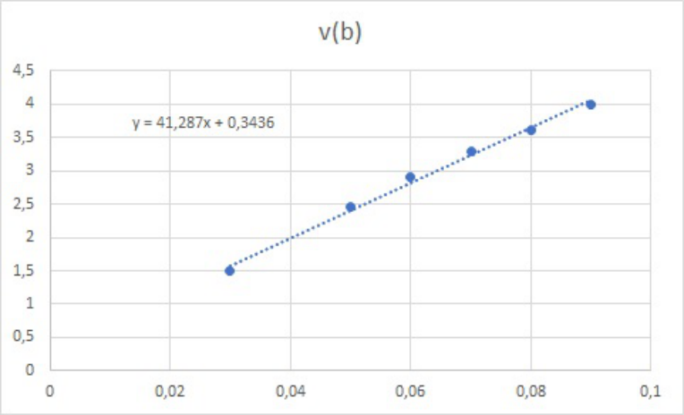
그 기울기는
C4. $v(\sin 2\varphi)$ 그래프를 그린다. 그 기울기는 $v_c = 4.2$이다. $b = b_{\rm cr}$에서 자구벽의 속도가 임계값이 되므로
$$b_{\rm cr} = \frac{v_c}{\mathrm{d}v/\mathrm{d}b} = 0.10.$$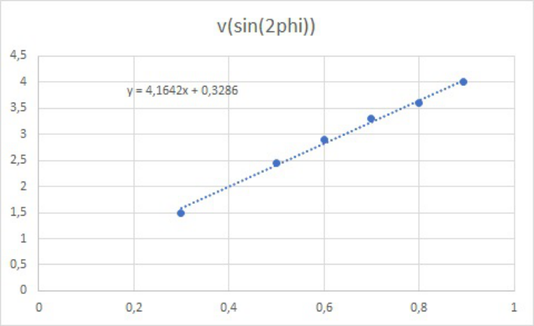
C5.
C6. $\alpha = 0.2$, $\beta = 100$, $b = 0.2$, $T = 100$, $L = 200$으로 프로그램을 실행한다. $t = 3, 6, 9, 12, \ldots, 90$에서 $m_z(x)$를 그리고, 그래프가 $x$축과 만나는 점의 $x$좌표로 $x_{\rm center}$를 정한다.
| $t$ | $x_{\rm center}$ | $t$ | $x_{\rm center}$ | $t$ | $x_{\rm center}$ |
|---|---|---|---|---|---|
| 3 | 57.4 | 33 | 115.2 | 63 | 151.4 |
| 6 | 70.1 | 36 | 105.9 | 66 | 163.3 |
| 9 | 82.0 | 39 | 106.2 | 69 | 170.2 |
| 12 | 89.2 | 42 | 117.1 | 72 | 170.0 |
| 15 | 86.1 | 45 | 129.9 | 75 | 158.3 |
| 18 | 77.3 | 48 | 140.2 | 78 | 162.8 |
| 21 | 81.5 | 51 | 143.6 | 81 | 174.9 |
| 24 | 93.6 | 54 | 137.2 | 84 | 187.4 |
| 27 | 106.1 | 57 | 131.0 | 87 | 196.2 |
| 30 | 115.0 | 60 | 138.7 | 90 | 196.1 |
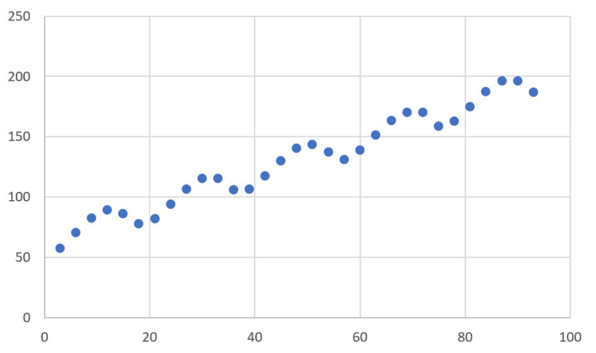